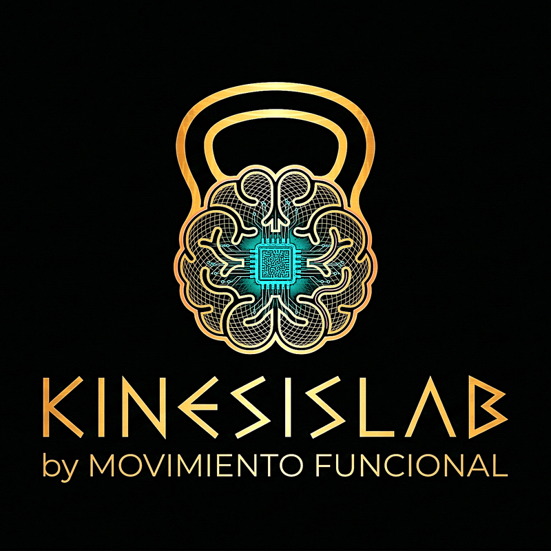

Mejor equilibrio, menos caídas
Los estudios sugieren que el entrenamiento dual-task puede mejorar el equilibrio y reducir el riesgo de caídas en adultos mayores.
Khan et al. 2025, Eur Geriatr Med — 44 ensayos, 2782 participantes

20 herramientas de entrenamiento cognitivo-motor para mejorar el equilibrio, la atención y la autonomía funcional a partir de los 40. Válidas para sesiones con entrenador o para entrenar por tu cuenta.
El cerebro no procesa dos tareas a la vez sin entrenarse. Por eso KinesisLab te enfrenta a colores que contradicen su nombre y cálculos invertidos mientras sostienes una postura inestable — el sistema nervioso aprende a no soltar el equilibrio cuando la atención se divide.

La vida real no avisa. Por eso KinesisLab genera señales impredecibles — visuales y auditivas, congruentes e incongruentes — que rompen la inercia del adulto y obligan al cerebro a decidir en milisegundos mientras el cuerpo se mantiene estable.

Combinar ejercicio físico con tareas cognitivas produce beneficios que ninguno logra por separado.
Los estudios sugieren que el entrenamiento dual-task puede mejorar el equilibrio y reducir el riesgo de caídas en adultos mayores.
Khan et al. 2025, Eur Geriatr Med — 44 ensayos, 2782 participantes
El entrenamiento combinado muestra resultados significativamente mejores que el ejercicio o la estimulación cognitiva por separado.
Gavelin et al. 2020, Ageing Res Rev — Network meta-analysis, g=0.22
Desde los 40, la memoria de trabajo, la atención y la función ejecutiva pueden deteriorarse. El entrenamiento dual-task puede ayudar a mitigarlo.
Khadilkar et al. 2026, Int J Gynaecol Obstet — Evidencia sobre menopausia y cognición
Las investigaciones indican que el entrenamiento puede reducir la hiperactivación prefrontal, logrando un procesamiento cerebral más eficiente.
Maidan et al. 2018, Neurorehabil Neural Repair — Neuroimagen funcional
Tamaños de efecto (Hedges' g) reportados en meta-análisis recientes. Mayor barra = mayor mejora.
Gavelin et al. 2020, Ageing Research Reviews — Network meta-analysis
Khan et al. 2025, Eur Geriatr Med — 44 ensayos, 2782 participantes
Síntesis de múltiples revisiones sistemáticas (2018–2026)
Gavelin et al. 2020 — Tamaño de efecto sobre cognición global
Tres pasos para integrar dual-task en cualquier sesión de entrenamiento.
Selecciona la tarea cognitiva adecuada al objetivo de la sesión: inhibición, memoria, atención o cálculo.
Configura la velocidad de los estímulos al nivel actual. Dosis óptima: 30 min, 3x/semana, intensidad moderada.
Ejecuta ejercicios de propiocepción o movilidad mientras respondes a los estímulos en pantalla.
Datos de revisiones sistemáticas y meta-análisis publicados en PubMed (2018–2026).
Nota sobre la evidencia: La calidad de la evidencia varía de muy baja a moderada según las escalas GRADE (Cochrane 2024). Esta herramienta no diagnostica, trata ni cura ninguna condición. Consulta siempre a un profesional sanitario.
Estímulos programables para añadir doble tarea a entornos inestables.
Go/No-Go, Stroop, flechas reactivas, búsqueda visual y conflicto audiovisual. Inhibe respuestas automáticas y mejora la velocidad de procesamiento.
N-Back, secuencias Simon, ordenación numérica, listas de objetos (NIH Toolbox) y matrices visoespaciales. Retener y manipular información en movimiento.
Decisión D50, fluencia verbal y reloj auditivo (ACT). El cerebro prioriza dinámicamente entre equilibrio y cálculo mental.
Temporizador clínico, comba funcional y boxeo reactivo. Complementos para estructurar series, pausas y combos durante la sesión.
La evidencia fNIRS muestra que el entrenamiento dual-task reduce la hiperactivación prefrontal.
Antes del entrenamiento, el cerebro sobrecarga la corteza prefrontal (PFC) para compensar la pérdida de automatismo. KinesisLab entrena la eficiencia metabólica: logramos que realices las mismas tareas con menor consumo de oxi-hemoglobina (oxy-Hb), re-automatizando el control postural.
Maidan et al. 2018, Neurorehabil Neural Repair
Para mujeres en transición menopáusica (40-60 años), el declive de estrógenos altera la neuroprotección focalizada en las redes fronto-parietales. KinesisLab no solo activa la neuroplasticidad; su enfoque en baja tensión mecánica permite fortalecer la estabilidad y prevenir la sarcopenia incipiente sin comprometer la integridad articular.
Khadilkar et al. 2026, Int J Gynaecol Obstet
Protocolos basados en revisiones sistemáticas y meta-análisis (2016–2026).
Frecuencia: 2-3 sesiones por semana. Duración: 30-60 minutos totales. Ciclo: 12 a 16 semanas para adaptaciones estructurales. Adherencia requerida: >95%.
Priorizar movimientos de coordinación y estabilidad (Sit-to-stand, Tándem, Reaching) sobre saltos balísticos. Desviamos el estrés hacia el sistema nervioso, no hacia las articulaciones.
Cada herramienta arranca en su modo más accesible y predecible (cadencia constante, niveles fijos). Las mejoras avanzadas (cadencia variable, modo adaptativo, bloques, sostenida) se activan cuando el cliente domina la base. El entrenador decide la progresión.
Evidencia publicada en PubMed (2016–2026).
Sin registro, sin coste, directamente en tu navegador.